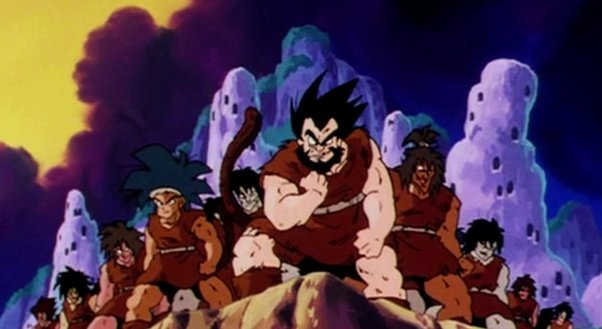
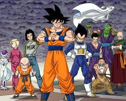
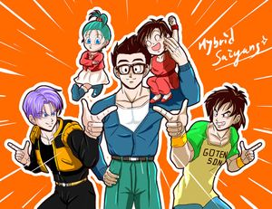
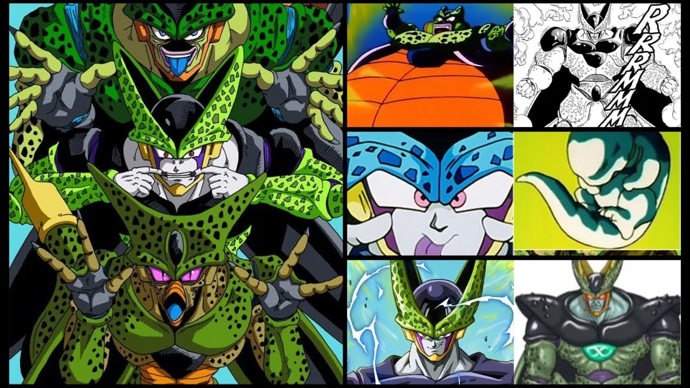

Saiyans
Saiyans (サイヤ人じん Saiya-jin) are a race of extraterrestrials in the Dragon Ball anime and manga and its adaptive sequels, Dragon Ball Z, Dragon Ball GT and Dragon Ball Super. In the series, the Saiyans from Universe 7 are a naturally aggressive warrior race who were supposedly striving to be the strongest in the universe, while the Saiyans from Universe 6 are protectors. Nearly all of the Saiyans from Universe 7 were obliterated by Frieza before the start of the Dragon Ball series. The Saiyans play a central role in the series once it is revealed that the protagonist, Goku, is actually a Saiyan sent to conquer Earth.
The name is a pun on yajin (野人) which means "wildman", and an anagram of yasai (野菜) which means "vegetable". The suffix -jin means "person". "Saiyan" is the English transliteration of the roman letter term Saiya-jin. In the Japanese language, Saiya-jin (サイヤ人じん) is pronounced "Sigh-ya-jeen" while in Funimation's English dubs, "Saiyan" is pronounced "Sey-uhn". All full-blooded Saiyans (such as Raditz, Kakarot, Vegeta, Nappa, Paragus, Broly, or Bardock) have names that are a pun on various vegetables. The homeworld of the Saiyans is Planet Sadala. The planet has a natural gravity that is ten times that of Earth, which helps give Saiyans a greater natural strength than most races.[1] In Universe 7, the Saiyans lived here but their planet got destroyed by internal discord; in Universe 6, the planet still exists. In Universe 7, Planet Plant is conquered by the Saiyans after the defeat of the Tuffles, and they renamed it "Planet Vegeta" after their most powerful warrior and ruler, King Vegeta. At some point, Planet Vegeta was visited by the God of Destruction Beerus, who ultimately deemed the Saiyans as a savage race with no chance of improving (or more accurately he felt that they were just annoying). He ultimately ordered Frieza to destroy the planet and the entire Saiyan race, who was of a similar mind set as he came to see the Saiyan race as potentially posing a threat to his tyranny. To which, the tyrant went to the planet and completely obliterated them from space, wiping out all but a small group of Saiyans.
Culture
Universe 7 Saiyans place great emphasis on strength and power as a source of prestige, measuring and defining their race from infancy by their power level and placing them in an associated social caste afterwards. A baby Saiyan's power level is measured as soon as they are born, if their power level is up to standard they are raised as upper-level warriors and become combatant candidates. If their power level remains low even after a certain amount of time has passed, they are classed as low-level warriors and become either engineers, scientists, or infiltration babies. Infiltration babies are sent off to a planet the Saiyans have selected for take over, and if the baby grows up into a warrior capable of taking over the planet they are allowed to return as a full-fledged combatant. Incidentally, infiltration babies have a low survival rate.[2] Coincidentally, despite their value on strength as a designator of social class, almost all Saiyans before the Genocide of the Saiyans were low-class, only about 10 mid-class, and the elite-class warriors were made up of only King Vegeta and his son Vegeta.[3] Despite placing great value on strength, Saiyans as people were not averse to dealing with other weaker cultures or civilizations provided, they could provide services in exchange, such as the case where the Saiyans agreed to raze planets for the Arcosians and later the Frieza Force in exchange for technology, wealth, and free reign to indulge their lust for battle onto other worlds. Saiyans do not naturally know how to fly, some need to be taught, while others figure out how to so on their own (like Pan did in Dragon Ball Super). Despite valuing strength and battle prowess, training to increase one's power level is also uncommon among Saiyans, with only a few Saiyan children receiving a short period of specialized training to acquire a greater power level.[4] Instead of playing like Earthling children, Saiyan children fight amongst themselves.[5] Saiyans also do not celebrate any holidays or yearly occasions. In terms of governance, Saiyans are generally ruled by the strongest of their kind of various warring clans, with the strongest clan of all ruling as dynastic lines of royalty among their peers, as is the case with the current Vegeta family line. However, strong enough Saiyans may overcome the current Saiyan royalty to replace them (like King Vegeta feared an infant Broly would eventually grow up to do in Broly - The Legendary Super Saiyan). On a cultural level, Saiyans possess a collective sense of pride in their status as a warrior race, believing themselves as unstoppable independent fighters and the strongest of their universe. Pride was significant to Saiyans until they were tamed by Frieza's army; causing all of the Saiyans who served Frieza (aside from Bardock) to have lost their pride.[6]
Technological prowess

Even prior to joining the Frieza Force, Saiyans possessed compact spaceships and combat-based items more advanced than the technology on Earth.[7] At some point Saiyans became capable with biotechnology, becoming able to create and even upgrade Saibamen and create birthing pods for their young to gauge combat prowess in infancy.
Military force

The Saiyans possessed a powerful military, the Saiyan Army (named only in the Funimation dub). As of Age 737, the Saiyan Army was under the command of Nappa (also stated only in the Funimation dub), who was its most powerful general.[8] The Saiyan Army was employed under the Frieza Force, in which the tyrant would use the Saiyan warriors to conquer planets for him. Normally only upper level warriors are allowed to become combatants in the Saiyan Army, and they are chosen from birth, the army employs various ranks based on power levels: the only ranks mentioned in the series are "Elites" and "Low-Class", with the series creator Akira Toriyama confirming in an interview that there are also "Mid-Class" warriors; while almost all Saiyans are low-class warriors, there are only about ten mid-class warriors, and only King Vegeta and Prince Vegeta are elite warriors.[9] This rank is determined by an innate latent battle power, but if their battle power rises greatly afterward, they can be promoted.[9] Saiyans who are deemed lower level warriors from birth are usually not able to become combatants, however a lower level warrior who is made an infiltration baby and who returns successful from their mission will be allowed to be a full-fledged combatant. The military force met its final destruction when Frieza committed his genocide of the Saiyans, with the force's only survivors being Vegeta, Nappa, Raditz, Onio, and two other male Saiyans. In Universe 6, the Saiyans try to protect the universe and get rid of evil doers. Because of this, they are known as Heroes of Justice. They also have their own elite unit in charge in protecting their home planet, called the Sadala Army.
Types
Ancient Saiyans

Ancient Saiyans (alternatively known as Prehistoric Saiyans)[10] existed long ago. Aside from time travelers, none still exist in the modern time. They possess ki completely different from their modern-day counterparts, but like them can transform into the Great Ape, Super Saiyan, Super Saiyan 2 and Super Saiyan 3 forms. Most of these Saiyans were evil, the most notable being Cumber, who displayed the unique "Evil Aura" and as an extension of this, their golden-haired Super Saiyan forms possessed differences to modern Saiyans and they were capable of drawing out the full power of Super Saiyan 3. Ddzk4o6-56f62ebd-46c5-4e02-8e54-6c1f9143f0d4 The twin brothers of the Super Saiyan God race, Shallot and Giblet in Dragon Ball Legends A subspecies of ancient Saiyans were the "Super Saiyan God race", born from the original Super Saiyan God. Good ancient Saiyans are referred to as "the defeated" by Giblet due to them having been defeated and killed by evil Saiyans.[11] They possess the potential to become Super Saiyan Gods.
Modern Saiyans

The modern Saiyans are descended from the evil ancient Saiyans who killed the original Super Saiyan God and historically wiped out the Super Saiyan God subspecies of Ancient Saiyan.[11] The Saiyans who eventually joined the Frieza Force were the Saiyans who moved from Planet Sadala to Planet Vegeta, nearly all of them were wiped out by Frieza - leaving only a handful remaining. These Saiyans have displayed the ability to take on any Saiyan form aside from the full power Super Saiyan 3 and those exclusive to the Legendary Saiyan. Modern Saiyans are referred to as "the tainted", due to possessing the blood of the evil Saiyans, and Neo Saiyans by Giblet.[11]
Earthling hybrids
While the Saiyans who worked under the Frieza Force are near extinct, they have carried on through Saiyan-Earthling hybrids through Goku and Vegeta, with these hybrids being fairly common by Age 1000.
Bio-Androids
Through advanced science, hybrid clones composed of Saiyans along with numerous other races were created from Age 767 on-wards. Bio-Androids like Cell have displayed the ability to use the Super Saiyan forms. The demonic Saiyan Bio-Androids have displayed their own distinct Super Saiyan form and can achieve the Dark King state via the Dark Factor.
Godly beings

Saiyans who are full deities can also exist, though only one and his counterpart have existed as a Supreme Kai candidate. Saiyans who are proper godly beings possess natural god ki, as well as an altered Super Saiyan Blue. Additionally, in Super Dragon Ball Heroes, his counterpart achieves godly versions of Super Saiyan 2 and Super Saiyan 3, as well as full power of their altered Super Saiyan 3 during which their Tail regrows.
Tuffle hybrids

Tuffle-Saiyans only existed in Age 789 as a result of Baby and his Tuffle Parasites invading Earth. Fully Tuffleized Saiyans have displayed their own variants of the golden-haired Super Saiyan forms known as the "Strongest Forms".